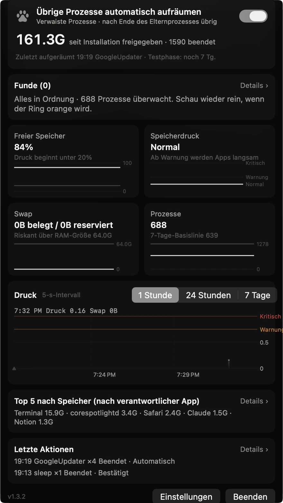
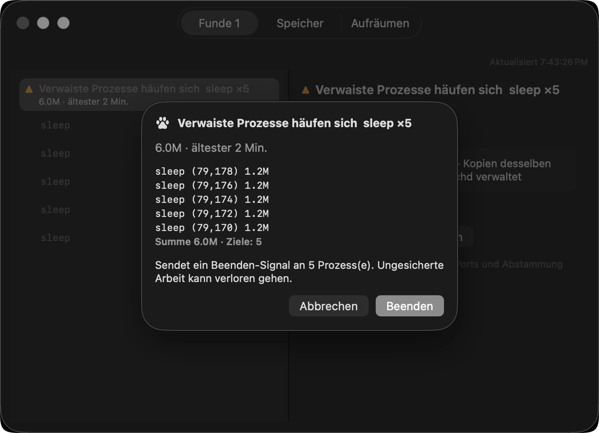
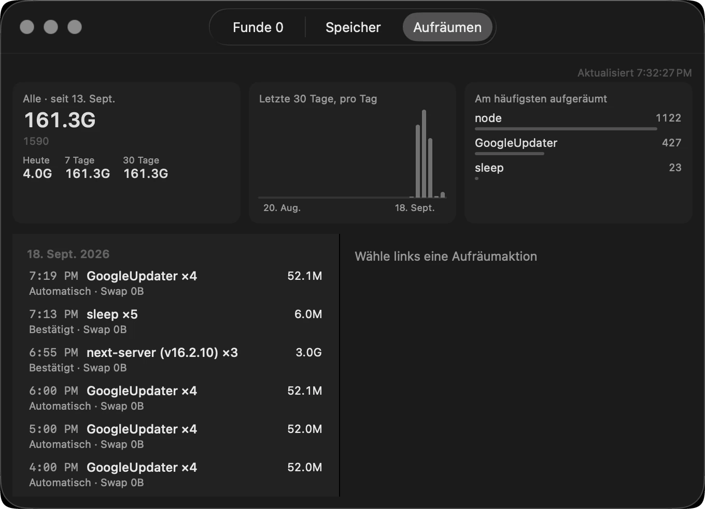

So sieht es aus
Jede Aufnahme unten stammt von dem Mac, auf dem dieser Text entstand — oder kommt direkt aus dem Code, mit dem die App ihr Symbol zeichnet. Nichts nachgezeichnet, keine Zahl aufgehübscht.
Eines in der Menüleiste
Im Alltag siehst du nur diese eine Pfote. Wer Zahlen will, schaltet sie in den Einstellungen ein.
Der Ring darum trägt den Speicherzustand.
Normalerweise still, im Ernstfall farbig.
 Zahlen aus (Standard)
Zahlen aus (Standard)

Zahlen an Normal
Normal Warnung
Warnung Gefahr
Gefahr Pausiert
Pausiert Räumt auf
Räumt aufWenn du darauf klickst
Der ganze Zustand passt auf eine Fläche, nichts zum Scrollen — zurückgeholt bisher, was gefunden wurde, freier Speicher und Swap, Anzahl der Prozesse, die Druckkurve, die letzte Aktion und ganz unten Einstellungen und Beenden.
Dieser Mac hat seit der Installation 161,3 GB zurückgeholt,
über 1.590 Prozesse.

Bevor irgendetwas endet
Ein Klick auf Aufräumen öffnet das Protokollfenster, listet auf, was gleich endet, und fragt noch einmal. Beendet wird nur, was du auswählst.
„Nicht gesicherte Arbeit kann verloren gehen.“
Das sagt es, bevor es irgendetwas beendet.

Was, wann und warum
Alles Beendete bleibt protokolliert — nach Datum, wie viele wovon, und wie viel zurückkam. Ein Jahr lang aufbewahrt.
Am meisten bereinigt — 1.122 node,
427 GoogleUpdater.

Aufgenommen am 18. September 2026 mit Paws 1.3.2 unter macOS 26 auf einem Mac Studio (M4 Max, 64 GB). Die Zahlen sind die echten Werte dieser Maschine. Die sechs Menüleisten-Symbole kommen direkt aus dem Code, der sie zeichnet (PawGauge, MenuBarLabel) — ein Bildschirmfoto lässt das Hintergrundbild durchscheinen und macht sie matschig.